Alaska 2020
From when I retreated from the world, for a brief moment.
Sunrise by the seaside in Valdez
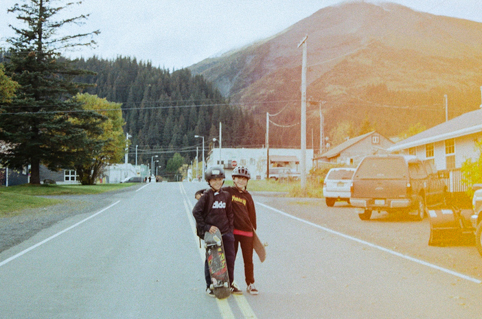
The only Alaskan gang I want to be a part of.
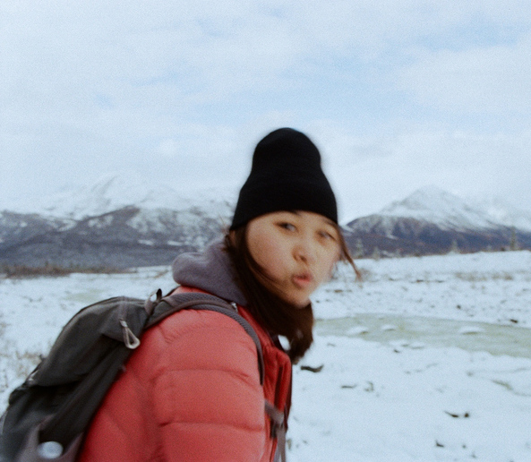
Hiking a lot in the cold with this one.
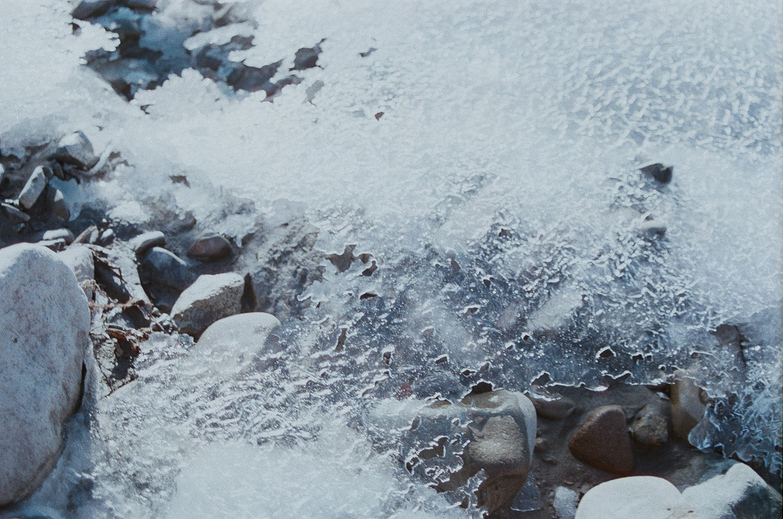
Stepping on these are not good for the soul.
Blurry shots of lonely sheds on the Alaskan road, from Fairbanks to Valdez.

 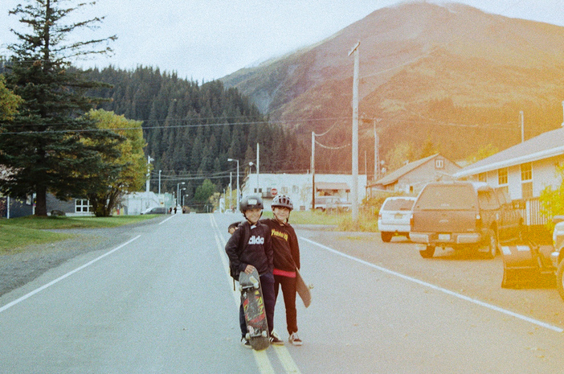
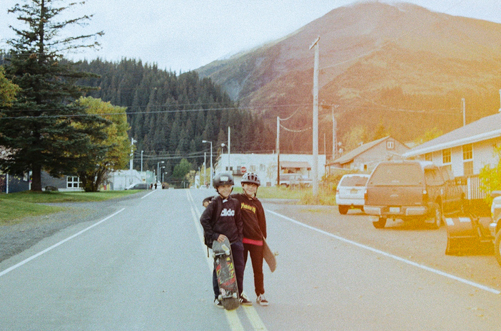  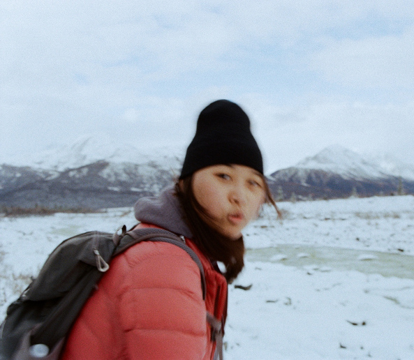
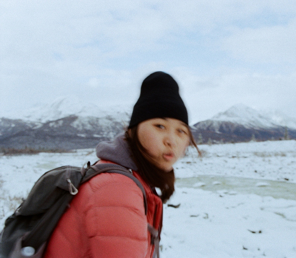 
 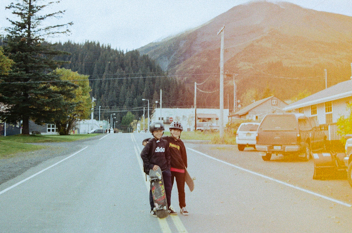 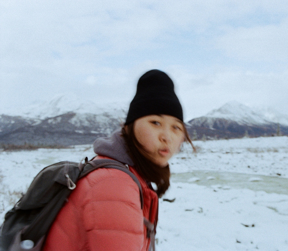
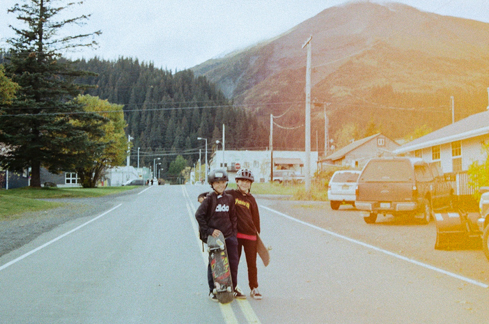 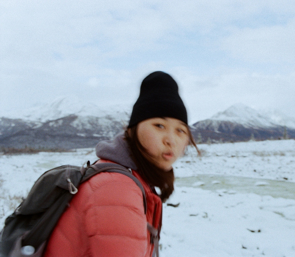